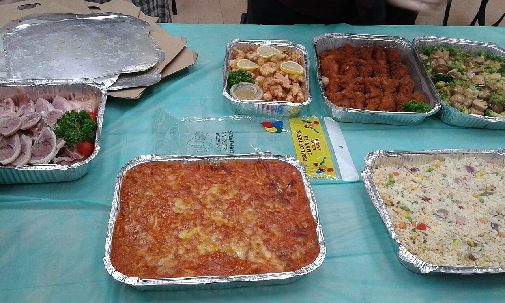
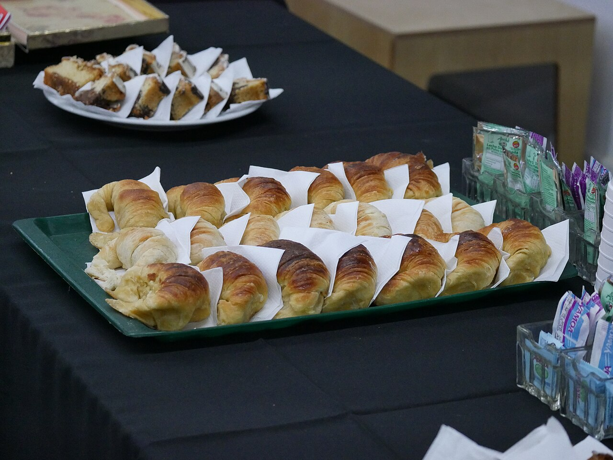
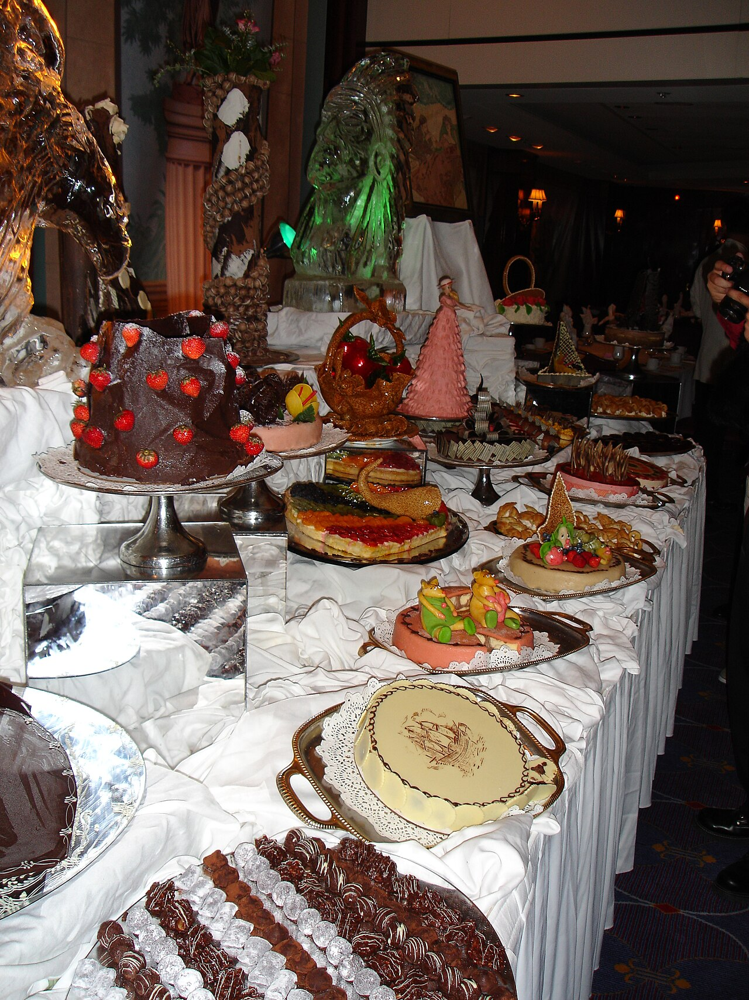

Boutique catering and take-out for every occasion - simchas, Shabbat and holiday meals, office events and family gatherings. Over thirty years of glatt kosher cooking, always fresh and plentiful.



Weddings, bar and bat mitzvahs, sheva brachot and family celebrations - full catering, designed around your simcha.
Complete Shabbat and chag menus, cooked fresh and ready for your table - including Pesach catering.
Generous trays and dishes to take home for any occasion - meat and milky options.
Personal requests are welcome. Tell us what your family loves and we will build the menu with you.